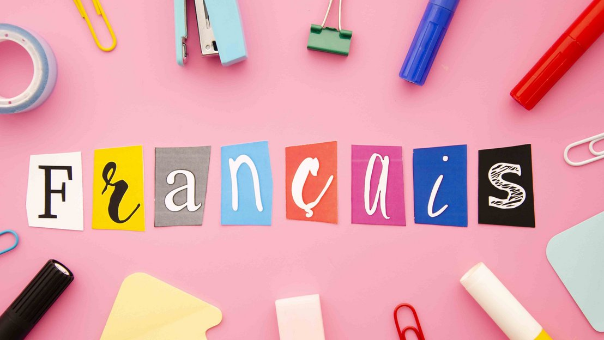

| Otras materias | Ilustracion | Informacion |
|---|---|---|
|  | Desde muy pequeño aprendi a hablar frances ya que mis papas me llevaron a vivir a canada, al principio me fue muy dificil ya que no entendia nada, pero como fui avanzando con el tiempo todo era mas claro hasta que practicamente por mi cuenta aprendi un asento nuevo y una manera diferente de comunicarme con las demas personas, sin mencionar que esta lengua me habre mas puertas en otros paises y trabajos. |